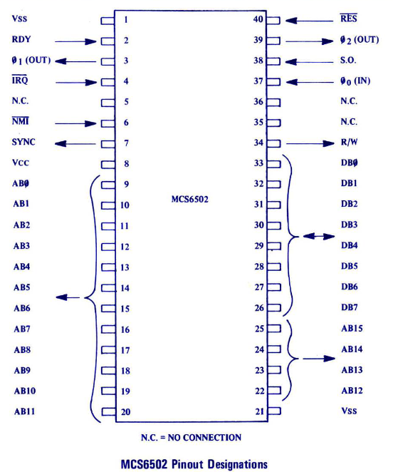

1.1. 6502 CPU¶
The 6502 microprocessor is a relatively simple 8 bit CPU with only a few internal registers capable of addressing at most 64Kb of memory via its 16 bit address bus. The processor is little endian and expects addresses to be stored in memory least significant byte first.
An instruction is executed by the processor in the following way: address of the next instruction is sent on the address bus and instruction is fetched. The ID (Instruction Decoder) decodes the instruction. Instruction is executed making use of the internal registers and the ALU (Arithmetic Logical Unit).
1.1.3. Memory¶
The memory is structured into pages of 256 bytes. The first 256 byte page of memory ($0000-$00FF) is referred to as ‘Zero Page’ and is the focus of a number of special addressing modes that result in shorter (and quicker) instructions or allow indirect access to the memory. The second page of memory ($0100-$01FF) is reserved for the system stack. The only other reserved locations in the memory map are the very last 6 bytes of memory $FFFA to $FFFF which must be programmed with the addresses of the non-maskable interrupt handler ($FFFA/B), the power on reset location ($FFFC/D) and the BRK/interrupt request handler ($FFFE/F) respectively.
The 6502 does not have any special support of hardware devices so they must be mapped to regions of memory in order to exchange data with the hardware latches.
1.1.4. Registers¶
Accumulator (reg_a): It is the main register of this CPU. By default the instructions use the accumulator.
Index registers (reg_index_x, reg_index_y): These registers are used in indirect addressing, adding their value to a given address. There is a limited number of instructions which can operate directly on these registers: load, store, increment, decrement, exchange data.
Program counter (reg_pc): This register always points to the next instruction to be executed. Originally this register was a pair of 8-bit registers, however, in the code a 16-bit register is used.
Stack pointer (sp): Contains the low order byte on Page One where the stack is located. The reset value of this register is 0xFF. Every time data is pushed on the stack, the register is decremented. Every time data is pulled from the stack the register is incremented.
Processor status register (reg_ps): This indicates the status of the CPU. Every single bit from this registers is a flag and is independent of the other bits.
BIT 7: N = negativity flag
BIT 6: V = signed overflow flag
BIT 5: - = not used
BIT 4: B = break command (not implemented)
BIT 3: D = decimal mode (not implemented)
BIT 2: I = interrupt DISABLE (not implemented)
BIT 1: Z = zero flag
BIT 0: C = carry flag
Instruction register (reg_i): This where the instruction op-code is stored temporarily after it is fetched. This is fed directly to the instruction decoder (ID). [Car84]
Implementation note: The exact execution of the instructions on Microcode level is not diclosed, so 1 additional register is used as buffer to the Arithmetic Logical Unit input (alu_reg_a) and 1 register to the output (alu_reg_out). Using these registers easy modification of ALU input and temporary storage of ALU ouput during microcode is possible.
The other register input of the ALU is connected directly to the data bus.
1.1.5. Instructions¶
There are 56 possible instructions. A detailed description of every one of them can be found at Instruction decoder documentation.
The instructions can be cathegorized into 3 groups.
The instructions can have 1, 2 or 3 bytes. The first byte always specifies the type of instruction and the addressing mode. The second byte can be a constant which is directly used, or it can be the low part of the address. The third byte is the high part of the address.
1.1.6. Addressing modes¶
When an instruction is executed the operands and the destination of the result is determined by the addressing mode. There are several addressing modes and the state machine is mostly dependent on these:
1-byte |
||||||||||
|---|---|---|---|---|---|---|---|---|---|---|
Accumulator mode addressing (A) : This is an implied addressing mode unique to the shift and rotate instructions. The data in the accumulator will be directly modified. Example
|
||||||||||
Immediate addressing mode (IMM): Execute the instruction with the constant, that is, the second byte of the instruction. Example
|
||||||||||
Implied addressing (IMPLIED): The operand and destination is implied by the instruction. In this type of addressing neither an operand, nor a destination is necessarily specified.
|
2-byte |
||||||||||||||||||||||||
|---|---|---|---|---|---|---|---|---|---|---|---|---|---|---|---|---|---|---|---|---|---|---|---|---|
Relative addressing mode (REL): It is used in branch instructions. The program counter points to the next instruction. If the condition for branching is satisfied, the second byte of the instruction is added to the program counter or subtracted from the program counter if bit 7 is set (using 2’s complement). Example 1
Example 2
|
||||||||||||||||||||||||
Zero page addressing mode (ZERO_PG): The operand is from page zero and only the low address byte specified. Example
|
||||||||||||||||||||||||
Zero page indexed X and Y addressing mode (ZERO_PG_IDX): The low byte of the address from page zero is fetched and the value of X or Y is added to it. The result cannot cross the page. It will wrap around. Example
|
||||||||||||||||||||||||
Indirect indexed addressing mode (IND_IDX): In this mode the second byte indicates the memory address in page zero, where the low address byte is stored. The high address byte is stored sequetially at the next address. After constructing an absolute address register Y is added to it. From the resulting address the operand will be fetched. Example
|
||||||||||||||||||||||||
|
3-byte |
||||||||||||||||||||
|---|---|---|---|---|---|---|---|---|---|---|---|---|---|---|---|---|---|---|---|---|
Absolute addressing mode (ABSOLUTE): The operand is extracted from an absolute (16-bit) address from memory. Example
|
||||||||||||||||||||
Indirect absolute addressing mode (IND_ABS): This is a subtype of absolute addressing, used only by JMP instruction. 2 sequential bytes at the provided absolute address are taken as low byte and high byte of an address. The resulting address points to the low and high byte of the program counter. Example
|
||||||||||||||||||||
Absolute indexed X and Y addressing mode (ABS_IDX): The absolute address is fetched and it is added together with value of X or Y. The resulting address will contain the operator on which the operation is going to be executed. Example
|
1.1.7. Pinout¶
Vss = Negative Supply Voltage (not needed in VHDL).
RDY (in) = Ready. Transitions take place during phase-1. The CPU checks ready line during phase-2. If ready line is low a wait state is introduced.
Phi0 (in) = Input clock.
Phi1 (out) and Phi2 (out) = Internally used phase-1 and phase-2 clocks. In the code only one input clock is used. Phase-1 is equivalent to the rising edge of the input clock, and phase-2 is equivalent to the falling edge of the input clock.
IRQ_n (in) = Interrupt Request. After completing the current instruction, the microprocessor will begin an interrupt sequence if and only if the interrupt mask flag is NOT set. The Program Counter and Status Register will be stored in the stack. The interrupt mask flag will be set high to prevent further interrupts. Program counter will be loaded from 0xFFFE (low) and 0xFFFF (high). Sampled during phase-2 if RDY is high and begins on phase-1.
NMI_n (in) = Non-Maskable Interrupt. The same interrupt sequence is executed as for IRQ_n, but the state of the interrupt mask flag does not matter. The program counter is loaded from 0xFFFA (low) and 0xFFFB (high).
SYNC (out) = This line goes high during phase-1 of fetch cycle.
Vcc = Positive Supply Voltage (not needed in VHDL).
AB (out) = Address Bus. Address is sent on phase-1.
RES_n (in) = Reset. If this line is low, writing to or from the microprocessor is inhibited. If this line goes high program counter will be loaded from 0xFFFC (low) and 0xFFFD (high) while the interrupt mask is set. On the original CPU, the reset sequence took 6 clock cycles. I reduced it to 3.
SO_n (in) = Set Overflow. If low the overflow flag will be set.
R/W_n (out) = Read/Not Write.
DB (inout) = Data Bus. Data is sent on phase-2 and it is read on phase-1.
[Car84] [MOS Technology, Inc.76a] [MOS Technology, Inc.75]
Implementation note: RDY, Phi0 (currenntly generated by testbench), IRQ_n, NMI_in, SO_n are not implemented or not implemented properly.
1.1.8. Microcode¶
Microcode is another name for a complete processor cycle. The term microcode is inspired by the first HDL implementation of 6502: Free-6502. [Kes99]
These cycles are also called microcode, because the processor executes operations which do not coincide necessarily with the operation decoded from the instruction. The next section provides a more detailed explanation of possible microcodes.
1.1.9. State machine¶
An explicit state machine is not available online. In the software manual there is a rough explanation of how many cycles a given addressing mode needs and what happens in those cycles. The state machine is constructed using these guidelines. [MOS Technology, Inc.76b]
State machine